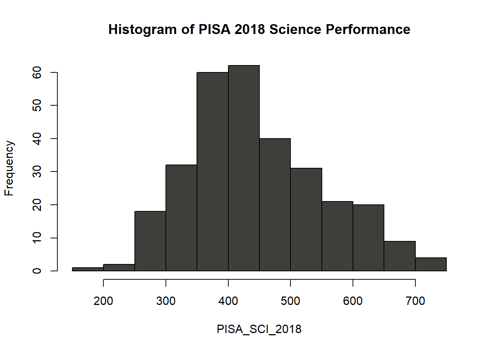
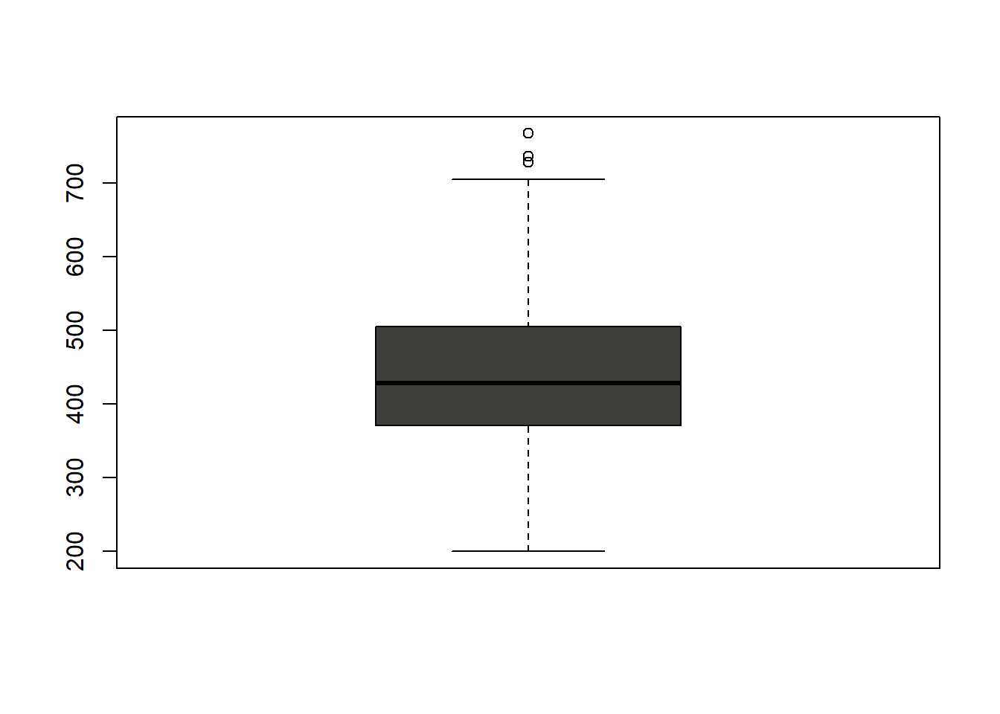
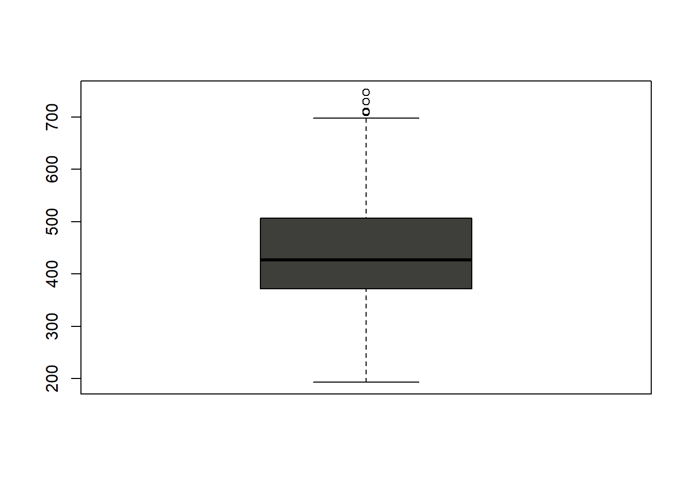

Process
NOTE: Testing data for K-Means Clustering 🧪🧪🧪
Table of Contents
Dependency Imports
library(learningtower)
library(dplyr)
library(tidyr)
library(factoextra)
library(reactable)Importing PISA 2018 Data
# Loading the PISA 2018 data and assigning it to variable PISA_2018
PISA_2018 <- load_student(2018)
# Sampling 10 observations from the data-set for showing example
PISA_2018_SAMPLE <- sample_n(PISA_2018, 10)
# Output of the sample
reactable(PISA_2018_SAMPLE,
searchable = TRUE,
striped = TRUE,
highlight = TRUE,
bordered = TRUE,
theme = reactableTheme(
borderColor = "#dfe2e5",
stripedColor = "#f6f8fa",
highlightColor = "#f0f5f9",
cellPadding = "8px 12px"))PISA 2018 Data Format
Total Number of Observations: 612,004 in the year 2018 alone
| Variable Name | Variable Type |
|---|---|
| year | Factor |
| country | Factor |
| school_id | Factor |
| student_id | Factor |
| mother_educ | Factor |
| father_educ | Factor |
| gender | Factor |
| computer | Factor |
| internet | Factor |
| math | Numeric |
| science | Numeric |
| read | Numeric |
| stu_wgt | Numeric |
| desk | Factor |
| room | Factor |
| dishwasher | Factor |
| television | Factor |
| computer_n | Factor |
| car | Factor |
Exploring the Data
# Class of the data
class(PISA_2018)## [1] "tbl_df" "tbl" "data.frame"# Total number of rows and columns in the data-set
dim(PISA_2018)## [1] 612004 22| Class | Dimension |
|---|---|
| data.frame |
612004 Observations 22 Variables |
Summary Statistics of the Data-set
# Mathematics summary Stats
MATH_STAT_2018 <- summary(PISA_2018$math)| Mininum | 1st Quarter | Median | Mean | 3rd Quarter | Max | Missing |
|---|---|---|---|---|---|---|
| 24.74 | 386.66 | 460.66 | 461.22 | 535.28 | 888.06 | 5377 |
# Science summary Stats
SCI_STAT_2018 <- summary(PISA_2018$science)| Mininum | 1st Quarter | Median | Mean | 3rd Quarter | Max | Missing |
|---|---|---|---|---|---|---|
| 58.74 | 385.60 | 458.20 | 460.69 | 533.44 | 886.08 | 5377 |
PISA_MATH_2018 <- PISA_2018$math
hist(PISA_MATH_2018,
main = paste("Histogram of", "PISA 2018 Mathematics Performance"),
col="#3e3f3a")
Distribution: Normal
PISA_SCI_2018 <- PISA_2018$science
hist(PISA_SCI_2018,
main = paste("Histogram of", "PISA 2018 Science Performance"),
col = "#3e3f3a")
Distribution: Normal
boxplot(na.omit(PISA_MATH_2018), col="#3e3f3a")
boxplot(na.omit(PISA_SCI_2018), col="#3e3f3a")
Summary Statistics of the remaining Variables
## year country school_id student_id
## 2000: 0 ESP : 35943 63400008: 491 10000002: 1
## 2003: 0 CAN : 22653 49900054: 423 10000005: 1
## 2006: 0 KAZ : 19507 63400054: 349 10000006: 1
## 2009: 0 ARE : 19277 49900020: 323 10000007: 1
## 2012: 0 AUS : 14273 49900014: 320 10000009: 1
## 2015: 0 QAT : 13828 9600014 : 314 10000010: 1
## 2018:612004 (Other):486523 (Other) :609784 (Other) :611998
## mother_educ father_educ gender
## ISCED 1 : 34557 ISCED 1 : 35046 female:304958
## ISCED 2 :100956 ISCED 2 :100865 male :307044
## ISCED 3A :319865 ISCED 3A :291768 NA's : 2
## ISCED 3B, C :113304 ISCED 3B, C :130423
## less than ISCED1: 18055 less than ISCED1: 17988
## NA's : 25267 NA's : 35914
##
## computer internet math read science
## no :105710 no : 49703 Min. : 24.74 Min. : 0.0 Min. : 58.74
## yes :486324 yes :543010 1st Qu.:386.66 1st Qu.:375.5 1st Qu.:385.60
## NA's: 19970 NA's: 19291 Median :460.66 Median :453.3 Median :458.20
## Mean :461.22 Mean :454.4 Mean :460.69
## 3rd Qu.:535.28 3rd Qu.:532.2 3rd Qu.:533.44
## Max. :888.06 Max. :887.7 Max. :886.08
## NA's :5377 NA's :41320 NA's :5377
## stu_wgt desk room dishwasher television
## Min. : 1.000 no : 68513 no :108901 no : 0 0 : 11304
## 1st Qu.: 4.946 yes :523492 yes :478520 yes : 0 1 :158958
## Median : 11.133 NA's: 19999 NA's: 24583 NA's:612004 2 :199649
## Mean : 46.857 3+ :223022
## 3rd Qu.: 43.973 NA's: 19071
## Max. :2946.134
##
## computer_n car book wealth escs
## 0 : 74357 0 :108424 26-100 :169222 Min. :-7.546 Min. :-8.173
## 1 :176453 1 :197311 0-10 :125583 1st Qu.:-1.135 1st Qu.:-1.010
## 2 :164784 2 :173190 11-25 :124194 Median :-0.371 Median :-0.188
## 3+ :176886 3+ : 95485 101-200: 84750 Mean :-0.432 Mean :-0.281
## NA's: 19524 NA's: 37594 201-500: 59168 3rd Qu.: 0.322 3rd Qu.: 0.594
## (Other): 33441 Max. : 4.753 Max. : 4.205
## NA's : 15646 NA's :13737 NA's :14379Data Cleaning
To-do’s:
- Renaming all columns to UPPERCASE and shorten its name
- Omit NA values from all columns
- Rebuilding new student profile
# Renaming columns to UPPERCASE
CNT <- PISA_2018$country
SCH_ID <- PISA_2018$school_id
STU_ID <- PISA_2018$country
MOTHER_ED <- PISA_2018$mother_educ
FATHER_ED <- PISA_2018$father_educ
GENDER <- PISA_2018$gender
COMPUTER <- PISA_2018$computer
INTERNET <- PISA_2018$internet
MATH <- PISA_2018$math
SCIENCE <- PISA_2018$science
STU_WGT <- PISA_2018$stu_wgt
DESK <- PISA_2018$desk
NO_TV <- PISA_2018$television
NO_COMPUTER <- PISA_2018$computer_n
NO_CAR <- PISA_2018$car
NO_BOOK <- PISA_2018$book
WEALTH <- PISA_2018$wealth
ESCS <- PISA_2018$escs
# Rebuilding new student profile
# Invoking na.omit to remove missing values from the data-set
STUDENT_PROFILE_2018 = na.omit(data.frame(
CNT,
SCH_ID,
STU_ID,
MOTHER_ED,
FATHER_ED,
GENDER,
COMPUTER,
INTERNET,
MATH,
SCIENCE,
STU_WGT,
DESK,
NO_TV,
NO_COMPUTER,
NO_CAR,
NO_BOOK,
WEALTH,
ESCS
))
# Summarizing new student profile data-set
summary(STUDENT_PROFILE_2018)## CNT SCH_ID STU_ID MOTHER_ED
## ESP : 32394 63400008: 433 ESP : 32394 ISCED 1 : 28900
## CAN : 18794 49900054: 394 CAN : 18794 ISCED 2 : 86090
## KAZ : 17413 63400054: 317 KAZ : 17413 ISCED 3A :290645
## ARE : 16589 49900014: 304 ARE : 16589 ISCED 3B, C :101583
## QCI : 11417 9600014 : 294 QCI : 11417 less than ISCED1: 14561
## QAT : 11340 49900020: 290 QAT : 11340
## (Other):413832 (Other) :519747 (Other):413832
## FATHER_ED GENDER COMPUTER INTERNET
## ISCED 1 : 29890 female:263079 no : 87985 no : 41307
## ISCED 2 : 88579 male :258700 yes:433794 yes:480472
## ISCED 3A :268804
## ISCED 3B, C :119612
## less than ISCED1: 14894
##
##
## MATH SCIENCE STU_WGT DESK NO_TV
## Min. : 24.74 Min. : 58.74 Min. : 1.000 no : 57634 0 : 8961
## 1st Qu.:394.95 1st Qu.:393.28 1st Qu.: 4.882 yes:464145 1 :138590
## Median :468.01 Median :465.38 Median : 10.907 2 :176113
## Mean :468.39 Mean :467.52 Mean : 45.490 3+:198115
## 3rd Qu.:541.39 3rd Qu.:539.40 3rd Qu.: 41.071
## Max. :888.06 Max. :886.08 Max. :2946.134
##
## NO_COMPUTER NO_CAR NO_BOOK WEALTH
## 0 : 60133 0 : 92293 26-100 :150701 Min. :-7.5465
## 1 :153709 1 :180188 11-25 :107037 1st Qu.:-1.0724
## 2 :147749 2 :161298 0-10 :103450 Median :-0.3355
## 3+:160188 3+: 88000 101-200 : 76680 Mean :-0.3885
## 201-500 : 54247 3rd Qu.: 0.3468
## more than 500: 29664 Max. : 4.7534
## (Other) : 0
## ESCS
## Min. :-7.7516
## 1st Qu.:-0.9423
## Median :-0.1240
## Mean :-0.2237
## 3rd Qu.: 0.6342
## Max. : 4.2051
## # New student profile
SAMPLE_STUD_PROF_2018 <- sample_n(STUDENT_PROFILE_2018, 10)
reactable(SAMPLE_STUD_PROF_2018)